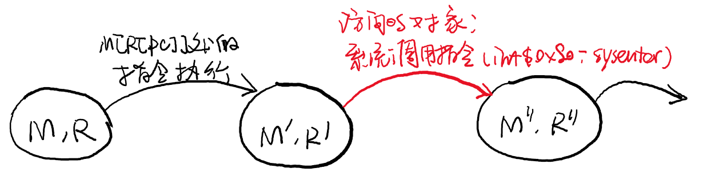
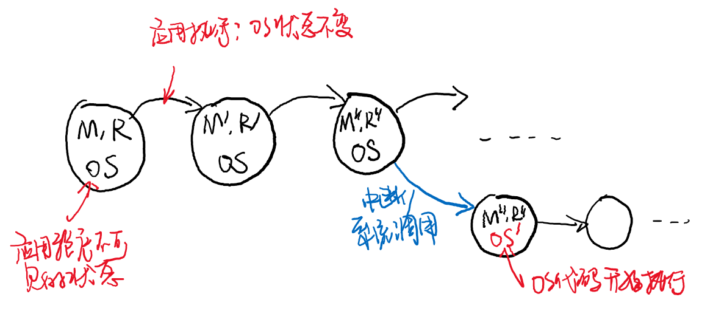
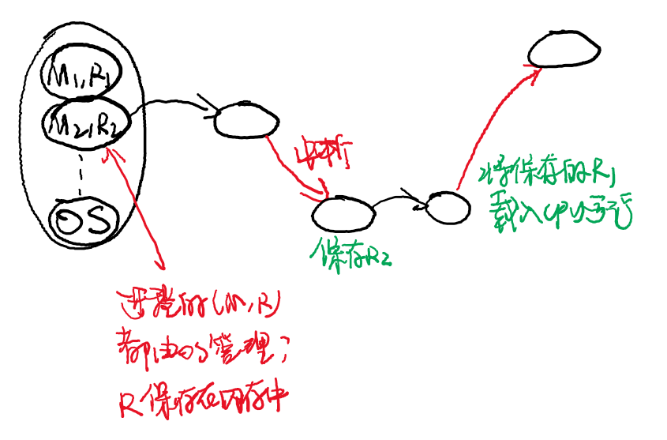

public: True class: center, middle # 虚拟化：进程抽象 蒋炎岩 <jyy@nju.edu.cn> 南京大学计算机软件研究所 --- # 本讲概述：复习 我们已经知道了两种并发的实现： - 操作系统上的线程(`threads.h`) - 线程管理：`create`, `join` - 自旋锁：`spin_lock/unlock` - 互斥锁：`mutex_lock/unlock` - 条件变量：`cond_wait/signal/broadcast` - 信号量：`sem_wait/post` - 物理多处理器 - 实际只支持原子指令(LOCK; LL/SC)、中断、I/O、虚拟存储等处理器机制 --- # 本讲概述 > 如何用原子指令、中断、I/O、虚拟存储……实现操作系统上的进程/线程？ > ---- * 操作系统中的进程 * Fork, exec, exit * 上下文切换 * 进程/线程的实现 --- class: center, middle # 操作系统中的进程 --- # 进程抽象 操作系统是执行.red[程序]的 > A computer program is a collection of instructions that performs a specific task when executed by a computer. 运行的程序(.red[进程])在执行指令时，它假设自己是.blue[直接占有整个CPU]的 * 硬件系统中通常只有几个处理器 * 但我们可以几乎无限地让程序同时运行 --- # 几乎无限地让程序同时运行？ 只要不停地创建进程，系统还是会挂掉的。 Don't try it (演示) .center[<img src="../static/wiki/os/2019/img/fork-bomb.jpg" width=500px/>] --- # 代码解析 这是一个“fork bomb”： .float-right[<img src="../static/wiki/os/2019/img/fork-bomb.png" width=300px/>] ```bash # 一行版本 :(){:|:&};: # 缩进后的版本 :() { : | : & }; : # 换个名字 fork() { fork | fork & }; fork ``` --- # Virtualizing the CPUs 处理器给每个进程提供的其实是“.red[虚拟CPU]” (并不等同于实际CPU) ---- 分时共享 (time sharing) * 物理CPU只执行一小段时间程序，然后在程序.blue[无法直接感知]的前提下，.red[切换]到另一个程序执行 * 进程无法关闭这个机制，如果需要访问操作系统中的资源，则需要通过操作系统API (系统调用) * 操作系统代码负责完成对实际处理器的配置、进程的切换、调度下一个执行的进程、完成系统调用…… --- # 程序：自动机视角 应用程序.red[只能]访问内存和寄存器，因此<math>(M, R)</math>就完全决定了应用程序的状态 .center[] --- class: center, middle # 进程管理API --- # 进程管理 操作系统会加载第一个进程 * 你可以配置任何程序为第一个进程，例如`pstree`看到的是systemd；你完全可以配置成`/bin/bash` (系统启动后得到一个root shell) * 之后系统里所有的进程都是这个进程的后代 ---- 进程管理API： * fork：创建进程 * execve：执行程序 * exit：结束进程 * wait：等待进程 --- # Fork 在系统中创建一个.red[完全一样的进程] (完全相同的代码、数据、堆栈)，除了`fork()`的返回值不同 ([fork-demo.c](/static/wiki/os/2019/demos/fork-demo.c)) * 父进程返回子进程pid * 子进程返回0 ---- 以下程序将输出多少个Hello？ ```c for (int i = 0; i < n; i++) { fork(); printf("Hello\n"); } ``` --- # Execve 将当前运行的进程“替换”成另一个程序，从头开始执行 ([execve-demo.c](/static/wiki/os/2019/demos/execve-demo.c)) * fork + execve = spawn * `execve(filename, argv, enpv)` - 执行名为filename的程序；分别传入参数`argv`和参数`envp` ---- 这刚好对应了`main()`的参数 ```c int main(int argc, char **argv, char **envp) { ... } ``` --- # Exit 结束当前进程执行 ([exit-demo.c](/static/wiki/os/2019/demos/exit-demo.c)) * 细心的你发现系统里有`exit()`和`_exit()`两个函数，它们有什么区别？ -- count: false * 区别：一个在.blue[库函数]层面；另一个在.blue[操作系统]层面 --- # Fork-Exec v.s. Spawn 绝大部分时候，我们都希望“创建”一个新进程 * 例如`system("oj-killer")` * 即fork后立即execve * 同理，操作系统也可以只提供 `spawn(path, argv, enpv);` ---- 只是历史原因吗？ --- # Fork-Exec v.s. Spawn 在使用execve执行程序之前，我们需要对创建程序进行.red[配置] * 例子：stdin, stdout, stderr, 其他文件描述符？ * 这会使`spawn`的参数列表非常冗长 Fork-exec: 在fork()之后可以随心所欲地配置，再execve() -- count: false ---- 而且fork给了我们很多娱♂乐(hacking)的空间 * (快照/恢复) F. Qin, et al. [*Rx: Treating bugs as allergies--A safe method to survive software failures*](https://dl.acm.org/citation.cfm?id=1095833). In Proc. of SOSP, 2005. --- # 小结 .center[<img src="/static/wiki/os/2019/img/fork-exec-exit.png" width=700px/>] --- class: center, middle # 上下文切换 --- # 操作系统原理 进程被动.blue[响应中断]或主动.blue[发起系统]调用，此时都将控制权移交给操作系统代码 * 从硬件的角度看，操作系统就是一个中断处理程序 .center[] --- # 操作系统原理 (cont'd) 进程切换 = 状态机<math>(M, R)</math>切换 * 中断发生时，将<math>(M_1, R_1)</math>保存到操作系统管理的内存 * 中断返回时，将保存的<math>(M_2, R_2)</math>恢复到CPU上 .center[] --- # 操作系统：实现多线程 如果操作系统里所有的进程(线程)都共享地址空间，那就简单了！ * 系统中只有一份共享内存<math>M</math> * 操作系统负责管理所有线程的寄存器现场<math>R_1,R_2,\ldots R_n</math> ---- 寄存器现场：.red[context (上下文)] * 所有可运行线程的寄存器现场都被保存在数据结构中 * 当前(`current`)线程正在执行 * 在中断/异常时保存当前context到`current->context` (代表了中断/异常返回时的处理器状态) * 选择下一个要执行的线程(改变`current`) * 将`current->context`加载到处理器中 --- # CTE APIs CTE在每次中断/异常时： * 保存处理器上下文`ctx`到当前运行线程的堆栈上(因此`kcontext`需要指定一个堆栈) * 调用`handler(ev, ctx);` * 将调用返回的context加载到处理中 ---- ```c int _cte_init(_Context *(*handler) (_Event ev, _Context *ctx)); _Context *_kcontext(_Area kstack, void (*entry)(void *), void *arg); ``` --- # 说得轻松，做得困难 .center[(CTE x86-qemu实现导读)] --- # CTE：得到了什么？ 花10分钟，写50行代码，就得到了一个操作系统 * [thread-os.c](/static/wiki/os/2019/demos/thread-os.c)：一个分时调度固定数量线程、round-robin调度的嵌入式操作系统 * CTE实现了对中断机制的.red[抽象]，让我们关注于“上下文”而不是“硬件寄存器” --- class: center, middle # 进程与线程 --- # 扩展到多处理器 刚才我们已经实现了.red[单处理器]上的.red[多线程]操作系统 * 每个线程有独立的寄存器上下文 * 所有线程共享内核的内存 ---- 多处理器天生共享内存，我们只需要 * 为每个处理器分配一个`current`，每个处理器都能独立地调度线程执行 * 访问共享数据结构时小心地使用锁(自旋锁或互斥锁) * 就实现了.red[多处理器、多线程]操作系统 ([thread-os-mp.c](/static/wiki/os/2019/demos/thread-os-mp.c)) --- # 实现进程 每个线程有它自己的资源 * `const char *name` - 它的名字 * `_Context context` - 保存的寄存器现场 * `char stack[4096]` - 堆栈 ---- .float-right[<img src="../static/wiki/os/2019/img/virtual-memory.jpg" width=400px/>] 线程凭什么不能有自己的地址空间呢？ * 当然可以啦！ * .red[进程 = 线程 + 地址空间]